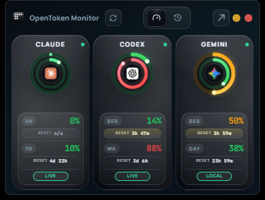
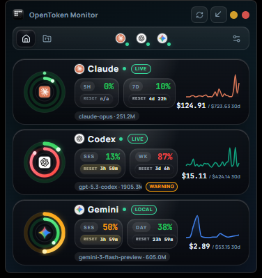

Track Every Token.
Own Every Dollar.
Open-source desktop app that monitors token usage and costs across your AI CLI tools — locally, privately, in real-time.


Open-source desktop app that monitors token usage and costs across your AI CLI tools — locally, privately, in real-time.

Widget View

Dashboard
Lightweight, private, and built for developers who care about what their tools actually cost.
Watch input/output tokens and cost estimates update live as your AI tools work.
Claude Code, Copilot, Cursor, Aider, Codex CLI — track them all from one dashboard.
Per-session breakdowns, daily trends, and monthly projections mapped to provider pricing.
All data stays on your machine in SQLite. Zero telemetry, zero cloud, zero tracking.
Extensible parsers for any AI CLI tool. Add support for new tools with minimal code.
Runs quietly in the background. Quick-glance stats without switching windows.
Rust + Tauri means minimal RAM and CPU footprint. No Electron bloat.
Full session logs with per-interaction token counts and cost breakdowns over time.
Download the binary for your OS. No dependencies, no setup wizards.
Point it at your AI tool logs. Claude Code paths are auto-detected.
See tokens and costs in real-time, session by session, tool by tool.
Built with Rust, Tauri, React, TypeScript, and SQLite. No black boxes.
// All data stays local — by design #[derive(Serialize, Deserialize)] pub struct AppConfig { pub db_path: PathBuf, pub poll_interval_ms: u64, pub log_sources: Vec<LogSource>, pub telemetry: bool, // always false }
Pick your platform. Install in seconds. Start tracking.
Or build from source on GitHub.